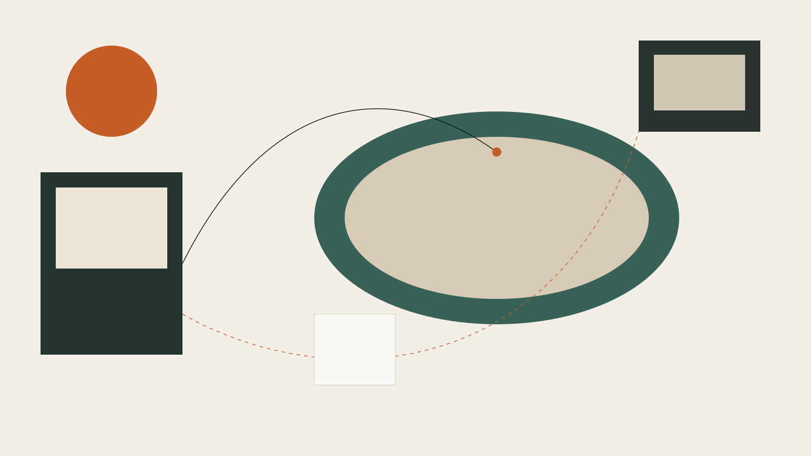

Samudra → Samitalia
Startup UK. Abbiamo seguito il radicamento in Italia: costituzione di Samitalia, raccolta con CDP e matching del Banco di Sardegna. Dossier, sede, interlocutori, fino ai soldi sul conto.
Onshoring
Trecento giorni di sole, costi più bassi che nel resto d'Europa, e un percorso concreto per arrivarci: sede, visti, bandi, casa. Vale per un'azienda che si trasferisce e per chi cerca il visto investitore.
Inizia il percorso
Cosa serve per radicarsi
Un'azienda che si trasferisce ha bisogni diversi da chi cerca solo il visto investitore. Costruiamo il percorso sul caso vero, non un pacchetto fisso.
Costituzione della società, sede legale e operativa, i documenti che servono da subito.
Italia Startup Visa o visto investitore, con la pratica seguita fino al permesso di soggiorno.
Voucher Startup e agevolazioni regionali, fino a circa 160.000 €.
Trovare casa e quartiere: la parte pratica del trasferimento personale, non solo quello societario.
Apertura conto e rapporti bancari locali — spesso il punto dove un trasferimento si blocca.
Le prime assunzioni sul territorio, con la rete TNV e Agency.
Per chi cerca il visto investitore: troviamo la startup giusta nel network per l'investimento qualificante da 250.000 €.
Due esempi, non gli unici
Startup UK. Abbiamo seguito il radicamento in Italia: costituzione di Samitalia, raccolta con CDP e matching del Banco di Sardegna. Dossier, sede, interlocutori, fino ai soldi sul conto.
Un imprenditore extra-UE con capitale da investire, ma senza ancora un investimento pronto per il visto. Troviamo la startup giusta nel nostro network per i 250.000 € che fanno da investimento qualificante, e seguiamo la pratica fino al visto.
Aziende partner
Sulla casa, le pratiche e — dove serve — sull'infrastruttura dati: partner che conosciamo e con cui lavoriamo quando il caso lo chiede.
Relocation · Real estate
Relocation e real estate in Sardegna per chi arriva dall'estero: casa, residenza, pratiche e percorsi fiscali, con un partner locale sul territorio.
Data infrastructure · Analytics
Warehouse, integrazioni e reporting nel cloud del cliente: un team gestito di data infrastructure per sport ed entertainment, con i dati che restano di vostra proprietà.
Azienda che si trasferisce, o singolo investitore: raccontateci il caso, scegliamo insieme quali dei sette pezzi servono davvero.